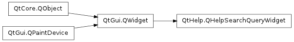

QHelpSearchQueryWidget ¶

Detailed Description ¶
The PySide.QtHelp.QHelpSearchQueryWidget class provides a simple line edit or an advanced widget to enable the user to input a search term in a standardized input mask.
- class PySide.QtHelp. QHelpSearchQueryWidget ( [ parent=None ] ) ¶
-
Parameters: parent – PySide.QtGui.QWidget Constructs a new search query widget with the given parent .
- PySide.QtHelp.QHelpSearchQueryWidget. query ( ) ¶
-
Return type: Returns a list of queries to use in combination with the search engines search( QList < PySide.QtHelp.QHelpSearchQuery > &query) function.
- PySide.QtHelp.QHelpSearchQueryWidget. search ( ) ¶